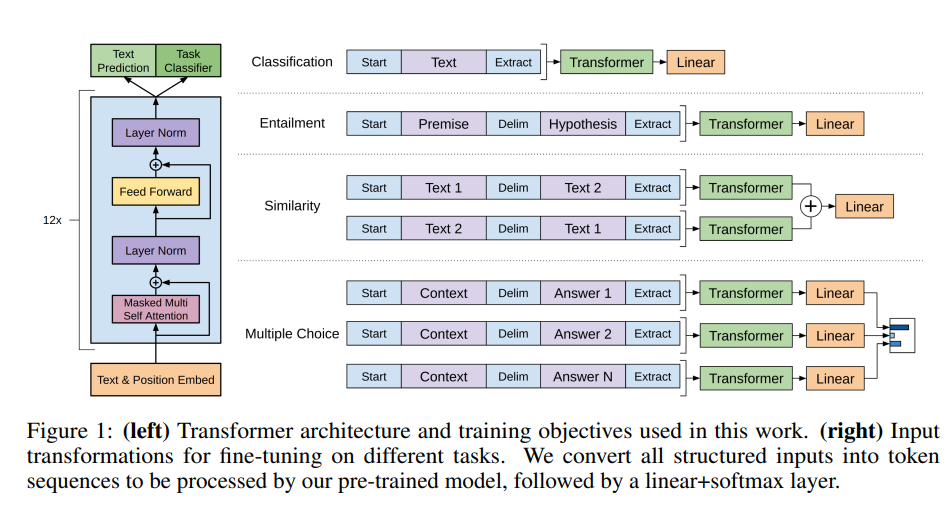

有幸参加了南大 NLP 夏令营，导师安排了一些读论文的任务，除了经典的“那篇论文”以外都没读过。这篇博客会简单记一些论文中核心的点（结合其他博客），不会去钻研细节，毕竟得一礼拜速通理论，目前仍然是完全没有实践的状态。
一。大语言模型
要求详细地看一下 Transformer 模型，这个我之前已经写过博客了：Transformer 学习笔记。除此之外，还需要对两个常见的预训练模型家族 BERT、GPT 有一定了解。
1.1 BERT
BERT 是把基于特征的预训练模型 ELMo 可以做双向训练的优势，运用基于微调的 GPT 的 Transformer 架构上的大模型。其训练过程依然是 “预训练+微调”，即先通过完形填空 + 句子预测（NSP）的任务去训练参数，再根据下游任务进行微调。
BERT 的输入可以是一个句子，也可以是句子对（因为只有编码器。输入的第一个元素是起始符 [CLS]，不同的句子之间用 [SEQ] 分割。根据下游任务的需求，要么是用 [CLS] 所对应的输出来判断情感等分类任务，要么是根据每个词元的输出做 QA 系统、序列标注等序列生成的事情。
1.2 GPT
初代 GPT 利用了半监督学习的方法来应对语言理解任务，具体是混合了无监督学习的预训练和有监督学习的微调。
对于一系列无标签语料 ，使用标准的语言建模目标来最大化以下似然：
其中，k 是语境窗口的大小， 是当前模型的参数。在训练的过程中，GPT1 使用的是多层 Transformer decoder，可以在输入上下文 token 上应用多头自注意力操作，然后通过逐位置前馈层来产生目标 token 上的输出分布。
对于下游任务的微调操作，GPT1 借助分割词等操作处理输入序列，转化为结构化的输入，如有序句子对或文档、问题和答案的三元组。对于不同的任务，还需引入大量任务的定制化架构。

1.3 GPT3~3.5
在 GPT3 的时代，作者意识到真正的大语言模型应该仅需要少量的实例说明便可迅速适应新的下游任务，而并非对于每个下游任务进行大量样本的 fine-tune。
而要想实现这一目的，论文作者通过实验发现，只需要增大参数量（GPT3 一共训练了 175billion 个参数），即可显著提高模型在 Few-shot 环境下的任务性能。
为此，作者给出了两种方案：
-
Meta-learning：元学习，即模型在训练阶段后具备一系列模式识别的能力和方法，并在预测过程中利用这些能力以快速适应下游任务;部分研究尝试通过
In-context learning的方法来实现上述过程，即给定任务说明以及简单的任务实例，要求模型进行预测任务。具体分为few-shot,one-shot,zero-shot等； -
Large Scale Transformers：大就是好！ 大模型的 1750 亿参数会记住In-context Learning所学习的知识，从而极大提升模型的任务性能；
虽然GPT3在文本翻译、问答系统、完型填空、新词使用和代数运算等任务表现不错，但在阅读理解和推理任务数据集上的表现仍有待提高。 但参考符神的博客，初代 GPT-3 有着非常强的潜力。 这些潜力后来经过代码训练、指令微调和 RLHF 解锁，最终展示出极为强大的突现能力。
二、高效微调
对于预训练语言模型（PLM）进行微调，即 fine-tuning 的操作，一般指的是给定下游任务的数据集，对于模型中的所有参数进行调整。但是对于如今大语言模型（LLM）来说，进行全参数的“微调”显然是不可能的。
高效微调技术可以粗略分为以下三大类：增加额外参数、选取一部分参数更新、引入重参数化。以上三种微调方案所对应的即为 Adapter, Prefix-Tuning 以及 LoRa.

2.1 Adapter
Adapter 的想法是，在原有的 Transformer 层中间添加 Adapter 层，当进行 fine-tuning 时，只微调 Adapter 层的参数即可。这样训练不仅更快，还保证了大模型原来存储的知识不被遗忘。
AdapterFusion 提出了 当下游存在多个任务 的时候，使用两阶段的 Finetune。第一阶段和Adapter Finetune 的思路一样，在预训练大模型基础上加上每个任务的 adapter进行微调，大模型参数不变。
在第二阶段，进一步冻结第一阶段训练的 adapter 层的参数，学习一个 AdapterFusion 模型。这个模型的思路是利用当前样本在FF层的输出和各个任务的 adapter 输出做Cross-Attention，实现从多个 Adapter 层的选择和融合。

2.2 Prefix-Tuning
在 Transformer 层之前加一个 prefix block，对于每个任务仅微调其前缀块的参数，并冻结预训练模型的参数。这样对于不同的任务，只需要 finetune 不同的前缀。

相比较于简单易懂的 Prompt Tuning，Prefix Tuning 采用的是添加一系列连续的 Word Embedding，并向上通过所有 Transformer 块，向右传播至后续 Token。
举例说，假设原来的 Input 是，那么Prefix Tuning 的 Input 即为 ； 前缀的参数是通过一个矩阵 存储的，目标函数与 finetune 类似：
在实际应用中，会加一层扩大维数的MLP，即 ，最后保留 即可。
2.3 LoRa
LoRa 感觉也不难，就是为原来的单纯的一个线性层变换，增加了一个 low-rank 的参数r，以及 (r, d) 和 (d, r) 的两个线性层。从而有 .

微调的时候只需要对 A, B 两个线性层调参即可。
三、提示词策略
主要是 In-Context Learning 以及 Chain of Thought，这两个也挺直白的，结合 ChatGPT 简单提两嘴：
In-Context Learning（上下文学习）的关键思想是从类比中学习。它需要一些示例来形成一个演示上下文。这些示例通常是用自然语言模板编写的。然后，ICL将查询的问题和一个上下文演示（一些相关的案例）连接在一起，形成带有提示的输入，并将其输入到语言模型中进行预测。
而 这篇论文 所指出的是，上下文的目的并非是学习输入与标注之间的关联，而是通过展示数据形式，来激活预训练模型的能力。
而 Chain of Thought的提出，展示了 “Let’s think step by step” 这个提示可以引导模型通过示例中一步一步的推理方式，去解决复杂的多步推理，在数学推理和符号推理中取得了 SOTA 的成果。
四、个性化生成
个性化文本生成旨在通过分析用户需求、喜好和行为特征，为用户提供量身定制的文本生成服务。尽管ChatGPT 此类基于大规模语言模型的对话系统近期为用户带来了颠覆性的体验，但其在个性化生成方面仍有所欠缺，难以满足不同用户在各种场景下的需求。
4.1 个性化人机对话系统
赋予对话系统以人格，这对于生成类似人类之间的对话来说十分重要。但是由于自然语言中的 “个性嵌入” 问题、以及绝大对话语料库中所存在的 “个性稀缺” 问题，实际操作起来仍有难度。
本文采用 Encoder-Decodoer 框架，在 encoder 中使用 属性嵌入 以捕捉和性格有很强联系的特征，在 decoder 中使用 注意力路由（attention routing） 以将性格嵌入到对话中。
目标是产生一个 Response Y，使得在语境C以及个性T下最优：
其中，个性T 可以视为一个键值对的集合，包含性别、喜好标签等；而 语境C 可表示为 的集合， 对应对话内容， 对应对话个性。
模型对应的框架结构如下：

其中 语境C 添加的属性嵌入用以标注每条对话所蕴含的个性。但是这种属性嵌入感觉没啥含金量，都是预设好的三个值（性别、居住地、爱好），感觉有点鸡肋。
解码器中的注意力路由可以控制目标人格 对于解码过程的影响，这东西本质上就是三个多头注意力层，分别处理个性、语境和之前生成的文本 ，并根据个性权重 得到最终输出，这是通过一个动态权重预测块（分类器）计算出来的。
虽然说是要做个性化对话系统，但论文里给出的例子除了二者的居住地信息以外，没看出来有啥突出个性的地方。
4.2 基于推荐系统的个性化
第二篇 paper 在可解释推荐这个课题上，提出一种个性化 Transformer。
可解释推荐可以这样定义：给定一个用户ID和一个产品ID，生成一句话来解释为什么这个产品要推荐给这个用户。既然这种 ID 可以存储个性化信息，那就可以利用这个信息 做个性化的文本生成任务。
作者在输入的开头加了两个 Token，分别代表 UserID以及ProductID，这个 Token对 可以通过 MLP 转化为上下文向量；但对于 Transformer 来说，token对出现的频率远小于单词出现的频率，如果单将这个 token对 视为一个词放进 Transformer 摁 train，很大概率会被视作词表外（OOV）。
因此，作者设计了一个 “上下文预测” 的任务，通过产品ID对应的向量去预测生成解释文本中出现的单词，从而将ID信息与推荐文本联系起来。除此以外，还设计了 “评分预测” 以及 “解释生成” 去满足个性化推荐的需要。

五、文本生成（通识
（模型）编码器-解码器框架 和 仅解码器框架的区别是，输入X 和 输出y 是否共享同一组参数的网络结构。
（推理）基于搜索的推理 & 基于采样的推理，前者追求准确度，后者追求随机性（surprise）。
（评估）模型生成的句子和参考句之间的相似度，基于模型的自动评价；对于故事生成，采用人类评价。